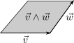
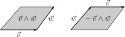
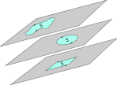
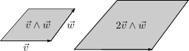
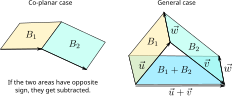
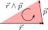
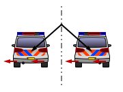
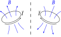

Calcolo numerico per la generazione di immagini fotorealistiche
Maurizio Tomasi maurizio.tomasi@unimi.it
The mathematics of transformations that we introduced in the last lesson allows us to easily create static images.
What would change if we wanted to create animations instead?
Let’s see a practical example.
Consider a 3D object centered at the origin.
Imagine that at time t = 0 of the animation the object must be at position \vec k_0, and at time t = 1 at position \vec k_1.
If I want to generate the frame of the object at a generic time 0 \leq t \leq 1, the transformation A is trivially
A(t) = T_{\vec k_0 + (\vec k_1 - \vec k_0) t} = \begin{pmatrix} 1&0&0&k_{0x} + (k_{1x} - k_{0x})t\\ 0&1&0&k_{0y} + (k_{1y} - k_{0y})t\\ 0&0&1&k_{0z} + (k_{1z} - k_{0z})t\\ 0&0&0&1 \end{pmatrix}.
Scaling transformation are equally trivial to animate: to scale from s_0 to s_1, I can define \xi(t) = s_0 + (s_1 - s_0) t so that the transformation is
A(t) = M_{s_0 + (s_1 - s_0) t} = M_{\xi(t)} = \begin{pmatrix} \xi(t)&0&0&0\\ 0&\xi(t)&0&0\\ 0&0&\xi(t)&0\\ 0&0&0&1 \end{pmatrix}.
Unfortunately, there is no such simple formula for rotations!
Rotations are represented through orthogonal matrices (R(t) R(t)^t = I).
We cannot interpolate the coefficients of two rotation matrices R(0) = \begin{pmatrix} m_{11}&m_{12}&m_{13}\\ m_{21}&m_{22}&m_{23}\\ m_{31}&m_{32}&m_{33} \end{pmatrix},\ % R(1) = \begin{pmatrix} m'_{11}&m'_{12}&m'_{13}\\ m'_{21}&m'_{22}&m'_{23}\\ m'_{31}&m'_{32}&m'_{33} \end{pmatrix},\quad with the usual formula m_{ij} + \bigl(m'_{ij} - m_{ij}\bigr) t: the resulting R(t) is not orthogonal!
The Planck satellite had a star tracker on board that identified the satellite’s orientation with respect to the fixed stars.
The orientation (attitude) was measured 10 times per second (the scientific data were sampled ~100 times per second) and transmitted to the ground station:
On the ground, the orientation is needed at the same sampling rate as the scientific data, so interpolation is necessary.
To do this, the Planck data reduction pipeline used quaternions.
In the last lecture, we expressed rotations in matrix form.
It is also possible to express rotations using complex numbers (in 2D) or quaternions (in 3D).
Quaternions have many advantages over 3D rotation matrices and are used in many fields.
We will not use quaternions in our code, so this topic will not be required for the exam. If you want to learn more, two excellent texts are Visualizing quaternions (A. J. Hanson) and Quaternions for computer graphics (J. A. Vince).
The algebra ℂ of complex numbers contains elements z = (\Re z, \Im z) = (x, y).
The product is defined as
z_1 \cdot z_2 = (\Re z_1\,\Re z_2 - \Im z_1\,\Im z_2, \Re z_1\,\Im z_2 + \Im z_1\,\Re z_2).
Introducing i such that i^2 = -1 and writing complex numbers in the form z = x + i y, the product formula is easier to remember:
(x_1 + i y_1) \cdot (x_2 + i y_2) = x_1 x_2 - y_1 y_2 + i \bigl(x_1 y_2 + x_2 y_1\bigr).
On the plane, it is possible to encode a rotation R(\theta) around the origin using the complex number
r(\theta) = e^{i \theta} = \cos\theta + i\sin\theta
if the vector to be rotated \vec{v} = x \hat e_x + y \hat e_z is associated with the complex number
z = x + iy.
Under these assumptions, the expression r(\theta) \cdot z is equivalent to R(\theta)\vec{v}.
Instead of the 4 coefficients of the matrix R(\theta), only \Re z and \Im z are needed.
Quaternions generalize the ability of complex numbers to encode rotations in 3D. They were proposed by W. R. Hamilton (the one from the Hamiltonian) in 1843 precisely to extend ℂ (“invented” a few decades earlier), and their algebra is indicated by ℍ.
If a complex number z is formed by two coefficients (the real part \Re z and the imaginary part \Im z), a quaternion q \in \mathbb{H} is composed of four coefficients:
q = (q_0, q_1, q_2, q_3) = \bigl(q_0, \vec{q}\bigr),
The term q_0 is called the scalar part, while \vec{q} = (q_1\ q_2\ q_3) is the vector part.
The product p q between two quaternions is defined as follows:
p q = \begin{pmatrix} p_0 q_0 - p_1 q_1 - p_2 q_2 - p_3 q_3\\ p_1 q_0 + p_0 q_1 + p_2 q_3 - p_3 q_2\\ p_2 q_0 + p_0 q_2 + p_3 q_1 - p_1 q_3\\ p_3 q_0 + p_0 q_3 + p_1 q_2 - p_2 q_1 \end{pmatrix}.
This product satisfies all the properties of an associative algebra but is not commutative: p q \not= q p. (First algebra of this kind in history!).
Hamilton invented a very convenient notation for quaternions: q = q_0 + q_1 \mathbf{i} + q_2 \mathbf{j} + q_3 \mathbf{k}.
If the following rules are defined, the product between quaternions from the previous slide follows consequently:
\begin{aligned} \mathbf{i} \mathbf{i} &= -1, &\mathbf{i} \mathbf{j} &= \mathbf{k}, &\quad\mathbf{j} \mathbf{i} = -\mathbf{k},\\ \mathbf{j} \mathbf{j} &= -1, &\mathbf{j} \mathbf{k} &= \mathbf{i}, &\quad\mathbf{k} \mathbf{j} = -\mathbf{i},\\ \mathbf{k} \mathbf{k} &= -1, &\mathbf{k} \mathbf{i} &= \mathbf{j}, &\quad\mathbf{i} \mathbf{k} = -\mathbf{j}. \end{aligned}
It is possible to define an inner product between quaternions:
p \cdot q = p_0 q_0 + p_1 q_1 + p_2 q_2 + p_3 q_3 = p_0 q_0 + \vec{p} \cdot \vec{q};
from this, we can define a norm:
\left\|q\right\| = \sqrt{q \cdot q} = \sqrt{q_0^2 + q_1^2 + q_2^2 + q_3^2} = \sqrt{q_0^2 + \left\|\vec{q}\right\|}.
There is also the conjugate
q^* = (q_0, -q_1, -q_2, -q_3) = (q_0, -\vec{q}).
Given a normalized vector \hat n and an angle \theta, we associate with it the quaternion
r(\theta, \hat n) = \left(\cos\frac\theta2, \sin\frac\theta2\,\hat n\right),
which represents the rotation by an angle \theta around \hat n.
If \left\|\hat n\right\| = 1, it obviously holds that \left\|r(\theta, \hat n)\right\| = 1.
Let’s see how to represent a 3D rotation using r(\theta, \hat n).
A generic vector \vec v is rotated into \vec v' through this product of three quaternions:
\vec v' = r(\theta, \hat n) \cdot (0, \vec v) \cdot r^{-1}(\theta, \hat n), where (0, \vec v) represents the quaternion associated with \vec v.
Intuitively, r(\theta, \hat n) appears twice in the formula because it depends on the angle \theta/2, and not simply on the angle \theta.
From the formula, it is evident that r(\theta, \hat n) and -r(\theta, \hat n) represent the same rotation.
A rotation matrix must be stored by saving 9 coefficients in memory, while a quaternion requires only 4.
Should we therefore use quaternions to represent rotations in our code?
Generally no! If you explicitly write the sequence of operations needed to rotate a vector, you’ll see that the matrix representation requires fewer calculations.
What are quaternions useful for, then?
The term slerp refers to the interpolation r(t) between two rotations r_1 and r_2.
The formula for r(t) \in \mathbb{H} for t \in [0, 1] is simply
r(t) = \frac{\sin(1 - t)\theta}{\sin\theta}r_1 + \frac{\sin t\theta}{\sin\theta}r_2,
where \theta is the “angle” between r_1 and r_2 (with \left\|r_1\right\| = \left\|r_2\right\| = 1):
\theta = r_1 \cdot r_2.
It is easy to show that r(t) represents a rotation \forall t\in [0, 1].
Representing rotations with quaternions fills the last missing “hole”: all the transformations presented in the previous lesson are easily interpolable:
The page Look, Ma, No Matrices! shows a nice example…
…which uses an extension of the concept of “quaternion”, multivectors, to generate the effects shown at the bottom of the page.
Let’s see then what multivectors and Clifford algebras are.
Vectors and pseudovectors follow different transformation rules.
To describe rotations on a 2D plane, it is necessary to use 3D (pseudo)vectors, like angular momentum \vec{L} = \vec{r} \times \vec{p} or torque \vec{\tau} = \vec r \times \vec F.
The cross product is definable only for \mathbb{R}^3 (and \mathbb{R}^7, due to octonions…), and has strange units: if v and w are in meters, v \times w is in m².
The representation of rotations requires increasingly complicated algebras as the dimensions increase (complex numbers, quaternions…).
It is not possible to invert products between vectors: if \vec a \times \vec x = \vec b with \vec a and \vec b known and x an unknown vector, there is no way to uniquely reconstruct \vec x.
Clifford algebras, and in particular geometric algebra, overcome all the problems listed in the previous slide.
It is a branch of mathematics that rebuilds classical linear algebra and provides a more intuitive and coherent interpretation of certain geometric properties. Clifford proposed it in 1878.
Geometric algebra is the application of Clifford algebras to the case of \mathbb{R}^n, and is what usually interests physicists. We will limit ourselves to these.
The problem with the cross product \times is that it is defined only on ℝ³, while we desire a general algebra!
In 1840, Hermann Günter Grassmann (1809–1877) defined the exterior product \vec v \wedge \vec w between two vectors v and w (today also called the Grassmann product) as the oriented area on the plane \mathrm{Span}(\vec v, \vec w) with surface area
\left\|\vec v\right\|\,\left\|\vec w\right\|\,\sin\theta.

An oriented area like \vec v \wedge \vec w is called a bivector.
Bivectors are oriented just like ordinary vectors: changing the sign of a bivector means reversing its direction of travel (∧ is antisymmetric).

This is analogous to what happens with a vector: \vec v \rightarrow - \vec v.
Just as a vector \vec v does not depend on the point of application, a bivector does not depend on its perimeter («shape»).

It may sound strange! However, this guarantees that (2\vec v) \wedge \vec w = \vec v \wedge (2\vec w).
This is the information encoded by an exterior product \vec v \wedge \vec w:
This information is not encoded:
We now see that it is possible to define scalar-bivector product and addition operations on bivectors: this makes them a vector space.
The expression \lambda \vec v \wedge \vec w with \lambda \in \mathbb{R} is still a bivector.
The area of \lambda \vec v \wedge \vec w is \left|\lambda\right| times the area of \vec v \wedge \vec w.
If \lambda < 0, the direction is reversed, otherwise it remains the same.


If two bivectors B_1 and B_2 are coplanar, then:
If they are not coplanar, a vector \vec w is considered along the line of intersection of the two planes, and \vec u and \vec v are identified such that
B_1 = \vec u \wedge \vec w,\quad B_2 = \vec v \wedge \vec w.
From the properties of \wedge it follows that B_1 + B_2 = (\vec u + \vec v) \wedge \vec w.
The sum formula appears complicated, but it allows the construction of a vector space.
Being a vector space, it is possible to decompose bivectors using bases, and in this way the sum is trivial to understand: as simple as adding \vec v = 3\hat e_1 + 2\hat e_2 to \vec w = -2\hat e_1 + \hat e_2.
We can define the canonical basis as the set of the three bivectors of unit area on the xy, yz and xz planes:
\hat e_1 \wedge \hat e_2, \quad \hat e_2 \wedge \hat e_3, \quad \hat e_1 \wedge \hat e_3.
If we have two bivectors
\begin{aligned} \vec v &= 3 \hat e_1 \wedge \hat e_2 - \hat e_1 \wedge \hat e_3,\\ \vec w &= 2 \hat e_1 \wedge \hat e_2 + 4\hat e_1 \wedge \hat e_3,\\ \end{aligned}
then their sum is
\vec v + \vec w = 5\hat e_1 \wedge \hat e_2 + 3\hat e_1 \wedge \hat e_3.
It is therefore trivial to perform calculations with bivectors!
The outer product can also be calculated between a bivector and a vector, and we can exploit the associative property:
\vec u \wedge \vec v \wedge \vec w = (\vec u \wedge \vec v) \wedge \vec w = \vec u \wedge (\vec v \wedge \vec w)
The trivector \vec u \wedge \vec v \wedge \vec w represents an oriented volume.
By repeatedly applying the outer product, we can generate trivectors, quadrivectors, etc. (This is why it is called outer).
In general, we speak of multivectors, or k-vectors: a scalar is a 0-vector, vectors are 1-vectors, bivectors are 2-vectors, etc.
Consider for example ℝ³ and the canonical basis \left\{\hat e_i\right\}.
These are some examples of trivectors and calculations associated with them:
\begin{aligned} \hat e_1 \wedge \hat e_3 \wedge \hat e_2 &= \hat e_1 \wedge (\hat e_3 \wedge \hat e_2) = -\hat e_1 \wedge (\hat e_2 \wedge \hat e_3) = -\hat e_1 \wedge \hat e_2 \wedge \hat e_3,\\ \hat e_2 \wedge \hat e_3 \wedge \hat e_1 &= -\hat e_2 \wedge \hat e_1 \wedge \hat e_3 = \hat e_1 \wedge \hat e_2 \wedge \hat e_3,\\ \hat e_1 \wedge \hat e_2 \wedge \hat e_3 \wedge \hat e_3 &= \hat e_1 \wedge \hat e_2 \wedge (\hat e_3 \wedge \hat e_3) = 0,\\ \hat e_1 \wedge \hat e_2 \wedge \hat e_3 \wedge \hat e_2 &= -\hat e_1 \wedge (\hat e_2 \wedge \hat e_2) \wedge \hat e_3 = 0.\\ \end{aligned}
From the last two examples, it is easy to see that the outer product of four elements of the basis is always zero.
Not only is the outer product of four elements of the basis zero: even if we take any four vectors in \mathbb{R}^3, their product is zero.
It is trivial to show that in a space \mathbb{R}^n the maximum grade of multivectors is n.
Consequently, in \mathbb{R}^3 only the following objects are non-trivial:
Clifford started from Grassmann’s outer product to define a product between vectors, which makes the vector space \mathbb{R}^n an algebra.
Clifford’s brilliant intuition was that the old, “classical” scalar product and Grassmann’s “new” outer product are intuitively related, because
\vec{v} \cdot \vec{w} \propto \cos\theta, \quad \vec{v} \wedge \vec{w} \propto \sin\theta,
and obviously \sin^2\theta + \cos^2\theta = 1.
The relationship can also be seen by comparing how the elements of the canonical basis of ℝ³ combine:
\begin{matrix} \cdot& e_1& e_2& e_3\\ e_1& 1& 0& 0\\ e_2& 0& 1& 0\\ e_3& 0& 0& 1 \end{matrix} \qquad\qquad \begin{matrix} \wedge& e_1& e_2& e_3\\ e_1& 0& e_1 \wedge e_2& e_1 \wedge e_3\\ e_2& -e_1 \wedge e_2& 0& e_2 \wedge e_3\\ e_3& -e_1 \wedge e_3& -e_2 \wedge e_3& 0 \end{matrix}
The idea of adding them together is tempting, also because it recalls the formula
z = \left|z\right|\bigl(\cos\theta + i\sin\theta\bigr).
The geometric product is the sum of the inner product and the outer product:
\vec v\,\vec w = \vec v \cdot \vec w + \vec v \wedge \vec w.
This product is defined on \mathbb{R}^n, for any value of n \geq 1 (but the case n = 1 is trivial), because the outer product \vec v \wedge \vec w itself is easily generalizable to n dimensions.
The geometric product defines an associative algebra on the vector space.
What does it mean to add a scalar like \vec v \cdot \vec w and a bivector like \vec v \wedge \vec w?
The «sum» must be understood in a non-literal sense, just like the sum of the real/imaginary parts (z = x + iy) or of orthogonal vectors (\vec v = 3\hat ı + 4\hat ȷ).
Similarly, the notation \vec v \cdot \vec w + \vec v \wedge \vec w is a mnemonic aid to remember how geometric products are added and multiplied.
Let’s calculate \vec v^2 for a generic vector \vec v:
\vec v^2 = \vec v \vec v = \vec v \cdot \vec v + \vec v \wedge \vec v = \left\|\vec v\right\|^2 + 0 = \left\|\vec v\right\|^2.
This result implies that \vec v / \left\|\vec v\right\|^2 is the inverse of \vec v:
\vec v \frac{\vec v}{\left\|\vec v\right\|^2} = \frac{\vec v \vec v}{\left\|\vec v\right\|^2} = 1,
and therefore \vec v^{-1} = \vec v / \left\|\vec v\right\|^2: like any respectable algebra, the inverse exists!
Suppose that \vec v \perp \vec w. Then
\vec v \vec w = \vec v \cdot \vec w + \vec v \wedge \vec w = \vec v \wedge \vec w.
For perpendicular vectors, the geometric product coincides with the exterior product.
The canonical basis \left\{\hat e_i\right\} therefore has the following properties:
\hat e_i \hat e_i = \left\|\hat e_i\right\|^2 = 1, \quad \hat e_i \hat e_j = \hat e_i \wedge \hat e_j = -\hat e_j \wedge \hat e_i = - \hat e_j \hat e_i\ \text{if $i \not= j$}.
We said that in \mathbb{R}^n there can be multivectors of degree up to n, because the exterior product \wedge of n + 1 vectors vanishes.
What happens to the geometric product of four orthonormal vectors in \mathbb{R}^3?
\begin{aligned} \hat e_1 \hat e_2 \hat e_3 \hat e_3 &= \hat e_1 \hat e_2 (\hat e_3 \hat e_3) = \hat e_1 \hat e_2\\ \hat e_1 \hat e_2 \hat e_3 \hat e_2 &= -\hat e_1 \hat e_2 \hat e_2 \hat e_3 = -\hat e_1 (\hat e_2 \hat e_2) \hat e_3 = -\hat e_1 \hat e_3,\\ \hat e_1 \hat e_2 \hat e_3 \hat e_1 &= -\hat e_1 \hat e_2 \hat e_1 \hat e_3= \hat e_1 \hat e_1 \hat e_2 \hat e_3 = \hat e_2 \hat e_3. \end{aligned}
We always get bivectors!
If you know how to operate on the elements of \left\{\hat e_i\right\}, it is easy to perform calculations on arbitrary vectors.
Take for example the vectors
\vec v = 2\hat e_1 + \hat e_2,\quad \vec w = -\hat e_2.
Then:
\begin{aligned} \vec v \vec w &= \bigl(2\hat e_1 + \hat e_2\bigr) \bigl(-\hat e_2\bigr) = 2\hat e_1 \hat e_2 - \hat e_2^2 = 2\hat e_1 \hat e_2 - 1,\\ \vec v^2 &= \vec v \vec v = \bigl(2\hat e_1 + \hat e_2\bigr) \bigl(2\hat e_1 + \hat e_2\bigr) =\\ &= 4\hat e_1^2 + 2 \hat e_2 \hat e_1 + 2\hat e_1\hat e_2 + \hat e_2^2 = 5.\\ \end{aligned}
In \mathbb{R}^2 you can only have 0-vectors (scalars), 1-vectors, and 2-vectors (bivectors).
The general form of a multivector is therefore
q = \alpha + \beta_1 \hat e_1 + \beta_2 \hat e_2 + \gamma \hat e_1 \hat e_2.
We have four degrees of freedom. How do its four components behave?
First, we note that from the expression
q = \alpha + \beta_1 \hat e_1 + \beta_2 \hat e_2 + \gamma \hat e_1 \hat e_2
it is possible to identify four subsets (subalgebras):
Apart from these trivial cases, are there other interesting subalgebras?
The pseudoscalar \hat e_1 \hat e_2 behaves like i!
\bigl(\hat e_1 \hat e_2\bigr)^2 = \hat e_1 \hat e_2 \hat e_1 \hat e_2 = -\hat e_1 \hat e_2 \hat e_2 \hat e_1 = -1.
Let’s compare complex numbers and multivectors with \beta_1 = \beta_2 = 0:
\begin{aligned} (3 + i) (1 - 2 i) &= 3 + i - 6 i + 2 = 5 - 5i,\\ (3 + \hat e_1 \hat e_2) (1 - 2\hat e_1 \hat e_2) &= 3 + \hat e_1 \hat e_2 - 6 \hat e_1 \hat e_2 + 2 = 5 - 5 \hat e_1 \hat e_2. \end{aligned}
They coincide! The algebra with \beta_1 = \beta_2 = 0 is isomorphic to \mathbb{C}, and we set \hat e_1 \hat e_2 = i.
The numbers e^{i\theta} rotate points on the complex plane ℂ. Does this also work with multivectors?
Let’s first see an interesting property of the geometric product:
\begin{aligned} \vec u \vec v &= \vec u \cdot \vec v + \vec u \wedge \vec v =\\ &= \left\|\vec u\right\| \cdot \left\|\vec v\right\| \cdot \cos\theta + \left\|\vec u\right\| \cdot \left\|\vec u\right\| \cdot \sin\theta \cdot \hat e_1 \hat e_2 =\\ &= \left\|\vec u\right\| \cdot \left\|\vec v\right\| \cdot \bigl(\cos\theta + i\sin\theta\bigr) \equiv\\ &\stackrel{\text{def.}}{\equiv} \left\|\vec u\right\| \cdot \left\|\vec v\right\| \cdot e^{i\theta} = \left\|\vec u\right\| \cdot \left\|\vec v\right\| \cdot e^{\theta \hat e_1 \hat e_2}, \end{aligned}
which for \left\|\vec u\right\| = \left\|\vec v\right\| = 1 leads to \vec u \vec v = e^{i\theta}, the rotation by an angle \theta!
To rotate a vector \vec v by an angle θ around the origin, it is sufficient to consider two unit vectors \hat u_1 and \hat u_2, whose angle between them is θ, and calculate the rotated multivector \vec v' as
\vec v' = \hat u_1 \hat u_2 \vec v = e^{i\theta} \vec v = \left(\cos\theta + i \sin\theta\right) \vec v.
This formula is valid only in the 2D case, but it can be rewritten in a general form.
The product between two complex numbers commutes, and so it is also in the Clifford subalgebra that contains multivectors in the form \alpha + \hat e_1 \hat e_2 \beta.
However, in the formula \vec v' = e^{i\theta} \vec v the vector \vec v appears, which is not part of the subalgebra: in this case the product does not commute!
In 2D, z \vec v = \vec v z^* holds, where z^* is the complex conjugate.
If we reduce to a relationship similar to the one seen for quaternions, namely
\vec v' = e^{i\theta} \vec v = e^{i\theta/2} e^{i\theta/2} \vec v = e^{i\theta/2}\vec v e^{-i\theta/2},
we will see that the formula has a much more general application.
Let’s consider the canonical basis \left\{\hat e_i\right\} in ℝ³.
The most general multivector we can think of must have this form:
\begin{aligned} &\alpha +\\ &\beta_1 \hat e_1 + \beta_2 \hat e_2 + \beta_3 \hat e_3 +\\ &\gamma_1 \hat e_1 \hat e_2 + \gamma_2 \hat e_2 \hat e_3 + \gamma_3 \hat e_3 \hat e_1 +\\ &\delta \hat e_1 \hat e_2 \hat e_3. \end{aligned}
We have eight degrees of freedom: 1 for scalars, 3 for vectors, 3 for bivectors, and 1 for trivectors (pseudoscalars). It still holds that (\hat e_1 \hat e_2 \hat e_3)^2 = -1 \equiv i^2.
To specify a rotation in 3D, you need the angle and the axis of rotation.
But in geometric algebra, you don’t specify the axis, but the plane of rotation: a bivector!
If the rotation plane is the bivector \hat I, the vector \vec v rotates into \vec v' through
\vec v' = e^{-\hat I \theta/2} \vec v e^{\hat I \theta/2},
which is the expression we already saw in the 2D case, where \hat I = i = \hat e_1 \hat e_2: the basis bivector laying on the complex plane. We have a geometric interpretation of the presence of i!
D. Hestenes, who rediscovered the works of Grassmann and Clifford in the 1960s-1970s, showed that the term i in the Schrödinger equation H \left|\psi\right> = i\hbar \frac{\mathrm{d}}{\mathrm{d}t} \left|\psi\right>, is related to the same rotation that represents spin in Dirac-Pauli theory.
It is only in a theory with electron spin that one can see why the wave function is complex […] spin is not a mere add-on in quantum mechanics, [and] was inadvertently incorporated into the original Schrödinger equation (Hestenes 2002)
It is easy to show that
(\hat e_1 \hat e_2)^2 = -1,\quad (\hat e_2 \hat e_3)^2 = -1,\quad (\hat e_1 \hat e_3)^2 = -1,
and therefore we can obtain a subalgebra that is isomorphic to the quaternion algebra ℍ by setting
\mathbf{i} = \hat e_2 \hat e_3, \quad \mathbf{j} = \hat e_1 \hat e_3,\quad \mathbf{k} = \hat e_1 \hat e_2.
As is easy to demonstrate, all the properties we had listed continue to be valid.
But the properties of bivectors in ℝ³ are the same that define the Pauli matrices, used to describe the coupling between spin and the electromagnetic field:
\sigma_1 = \begin{pmatrix}0& 1\\1& 0\end{pmatrix}, \quad \sigma_2 = \begin{pmatrix}0& -i\\i& 0\end{pmatrix}, \quad \sigma_3 = \begin{pmatrix}1& 0\\0& -1\end{pmatrix}.
From the perspective of geometric algebra, the gap between classical physics and quantum mechanics is reduced, because the latter is based on bivectors on the real field ℝ as in the case of classical mechanics (where, however, bivectors are much less pervasive).
In 3D there is the vector product \vec u \times \vec v. What is the equivalent in geometric algebra?
The formula for the vector product in classical geometry is
\vec u \times \vec v = (u_2 v_3 - u_3 v_2) \hat e_1 + (u_3 v_1 - u_1 v_3) \hat e_2 + (u_1 v_2 - u_2 v_1) \hat e_3.
If we explicitly write the exterior product, we get
\vec u \wedge \vec v = (u_2 v_3 - u_3 v_2) \hat e_2 \hat e_3 + (u_3 v_1 - u_1 v_3) \hat e_3 \hat e_1 + (u_1 v_2 - u_2 v_1) \hat e_1 \hat e_2.
It’s not the same thing, but we’re very close!
If i = \hat e_1 \hat e_2 \hat e_3, it can be easily verified that
i\vec u \times \vec v = \vec u \wedge \vec v,
and this formula can be used as a starting point to convert classical equations containing \times into the formalism of geometric algebra.
The exterior product has a number of advantages over the vector product:
The vector product appears in many laws of physics:
Rigid body dynamics;
Maxwell’s equations;
Lorentz force.
In all these cases it is possible to modify the definitions and formulas to use the exterior product instead of the vector product.
The angular momentum can be defined as the bivector \vec L = \vec r \wedge \vec p:

Unlike the traditional definition (\vec L = \vec r \times \vec p), here \vec L represents an oriented section of a plane, which is intuitive: it is the plane on which the rotation takes place, and the orientation corresponds to the direction.
Remember the image that illustrated the reflection of pseudovectors?

If L is a bivector, there is no problem! The plane on which the wheel rotates is perpendicular to the screen, and it is trivially reflected in the mirror.
\vec E is a vector, but \vec B is a bivector!

(But it is more convenient to think in terms of the multivector \vec F = \vec E + i c \vec B).
Geometric algebra greatly simplifies the geometric equations needed in our course.
For example, scalars, vectors, planes, and volumes could be
encoded by a single Multivector type, and transformations
(rotations, translations, etc.) should be implemented only once: how
wonderful!
However, a multivector in ℝ³ requires 8 floating-point numbers to
be stored: since ray tracers mostly use vectors, this is a waste (our
Vec structure requires only 3 floating-point
numbers).
It is difficult (but not impossible) to implement efficient ray-tracing programs that use geometric algebra.
A swift introduction to geometric algebra: some ideas and diagrams in these slides were taken from here (YouTube video, about 40 minutes).
Geometric Multiplication of Vectors (M. Josipović): very clear, aims to provide an intuitive idea of how geometric algebra works.
Understanding Geometric Algebra (K. Kanatani): has a more systematic approach than Josipović; shows the link between homogeneous matrices and geometric algebra.
Geometric Algebra for Physicists (C. Doran, A. Lasenby): though introduction to GA and its applications to Physics. Includes classical mechanics, special relativity, electromagnetism, quantum mechanics, Lagrangian formalism, gravitation, etc.
Understanding geometric algebra for electromagnetic theory (J. W. Arthur): this only deals with electromagnetism and special relativity.
Geometric Algebra. An Algebraic System for Computer Games and Animation (J. A. Vince): shows how typical equations used in computer graphics (rotations, quaternions, projections, ray tracing, etc.) can be reformulated using multivectors.
A history of vector analysis (M. J. Crowe): describes the history of vector analysis, comparing the algebras of Hamilton, Grassmann/Clifford, and the vector system of Gibbs/Heavyside (which is the «classical» one, but was born last).